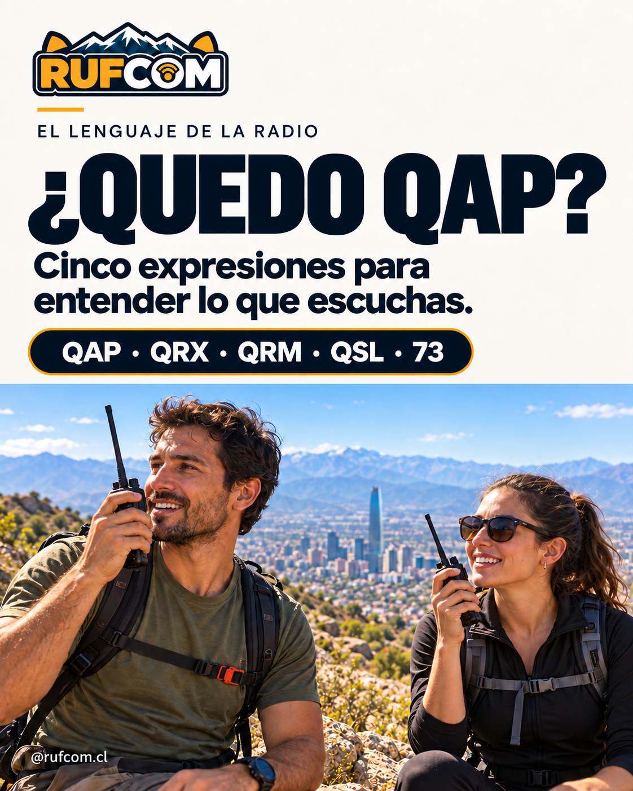

Tres letras que resumen una idea
Los códigos Q permiten expresar preguntas y respuestas de forma breve. En telegrafía, un signo de interrogación distingue la pregunta: QSL? pide confirmar recepción; QSL la confirma. En conversaciones de voz también escucharás usos coloquiales.
No necesitas hablar en códigos para comunicarte bien. Si tu interlocutor no los conoce, usa palabras claras.
QAP
Quedo a la escucha
«Quedo QAP, atento a tu llamado».
Uso habitual en algunas redes. No tiene una interpretación universal: si hay dudas, di «quedo a la escucha».
QRX
Espera; volveré a llamar
«QRX un minuto; vuelvo a llamar».
En el código formal pregunta cuándo volverás a llamar. En voz se usa habitualmente para pedir una pausa; indica cuánto durará.
QRM
Hay interferencia
«Tengo QRM; repite el último dato».
Describe interferencia. QRN se refiere a estática o ruido atmosférico. No llames QRM a cualquier dificultad para escuchar.
QSL
Confirmo recepción
«QSL, recibí el mensaje».
Confirma que recibiste el mensaje. Una tarjeta QSL sirve para confirmar un contacto; es otro uso relacionado de la expresión.
73
Saludos cordiales
«Gracias por el contacto. ¡73!».
Es un saludo usado al despedirse. Es un número, no un código Q.
Una conversación de ejemplo
Operador A: «Tengo QRM. ¿Puedes repetir el lugar de encuentro?»
Operador B: «En la entrada del sendero».
Operador A: «QSL. QRX un minuto; reviso el mapa y vuelvo a llamar».
Operador B: «Quedo a la escucha».
Al despedirse: «Gracias por el contacto. 73».
Ejemplo didáctico. En una comunicación real también debes identificar tu estación según corresponda.
¿Lo recuerdas?
Recibiste el mensaje y quieres confirmarlo. ¿QRM, QSL o 73?
Ver respuesta
QSL: confirmo recepción. QRM indica interferencia y 73 es un saludo.